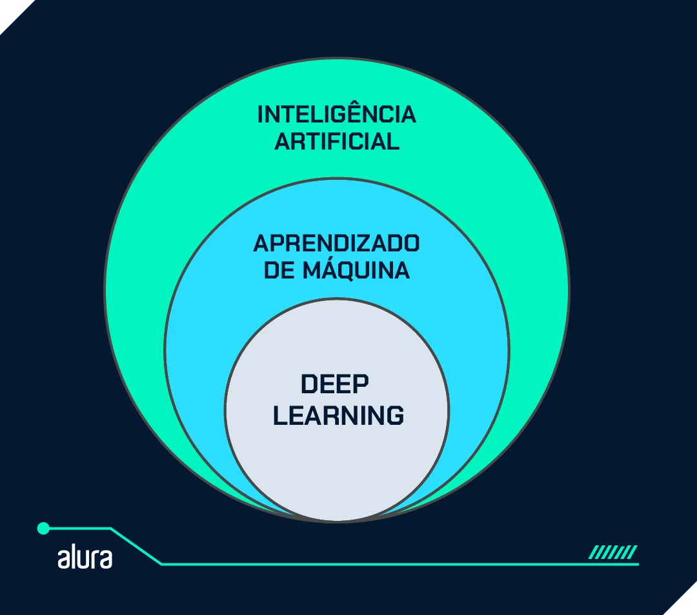

Definição de deep learning

Deep learning, ou "aprendizado profundo", é um subconjunto do machine learning, em que criam redes neurais artificias, são algoritmos modelados para o funcionamento do código como um cérebro humano, aprendem com grandes quantidades de dados.
Como o deep learning funciona?

O deep learning é desenvolvido por camadas de redes neurais, que são algoritmos modelados livremente como os cérebros humanos funcionam. O resultado desse código é um software que uma vez treinado, começa a processar novos dados. Esses modelos de aprendizado absorvem informações de várias fontes de dados e analisam esses dados em tempo real, sem a necessidade de um humano o ajudando.
Qual é a diferença entre deep learning e redes neurais?
Em termos simples, o aprendizado profundo é um nome para redes neurais com muitas camadas. Para essa rede neural artificial processar alguns dados, como fotos áudios ou prompts, elas passam por diversas camadas de nós interconectados.
Quando um dado passa por uma camada ela executa uma operação simples e o redireciona para outros nós, até que a rede crie a saída. Assim tornando dados mais precisos e as GPUs são otimizadas para cálculo de dados e projetadas para um desempenho rápido de cálculos.
Por que usar deep learning?
Análise de dados estruturados: Os algoritmos de deep learning podem ser treinados para analisar dados de texto analisando postagens de redes sociais, notícias e pesquisas para fornecer informações valiosas sobre negócios e clientes;
Rotulagem de dados: O deep learning requer dados rotulados para o treinamento. Depois de treinado, ele pode rotular novos dados e identificar diferentes tipos de dados sozinho;
Engenharia de recursos: Um algoritmo de deep learning pode economizar tempo porque não requer que as pessoas extraiam recursos manualmente dos dados brutos;
Eficiência: Quando um algoritmo de deep learning é treinado corretamente, ele pode executar milhares de tarefas repetidas vezes, mais rápido que os humanos.
Implementação de modelos de deep learning
Há diversos códigos abertos para desenvolver modelos de deep learning, seja treinando um modelo desde o zero ou realizando alguns ajustes finos em um modelo já pronto. Essas bibliotecas de aprendizado de máquina oferece uma variedade de modelos e fluxo de trabalho para construir, trinar e avaliar redes neurais, simplificar e otimizar o processo de desenvolvimento.
Entre os frameworks de código aberto mais populares para trabalhar com algoritmos de deep learning estão PyTorch, TensorFlow e (particularmente para LLMs) a biblioteca Hugging Face Transformers. É recomendado aprender Python antes de trabalhar com esses frameworks.